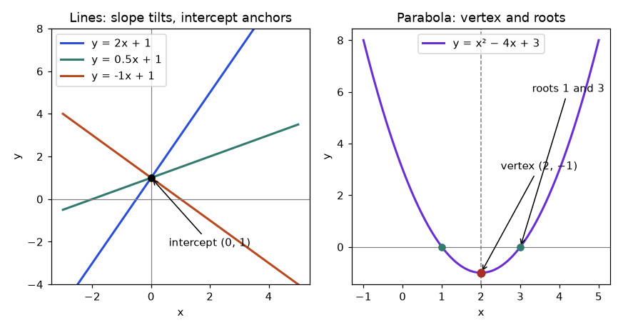
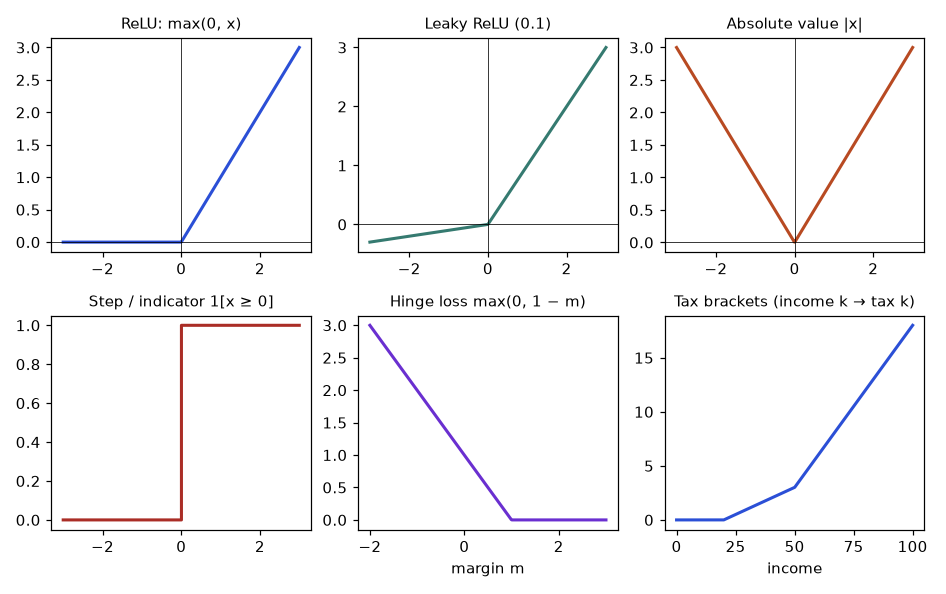
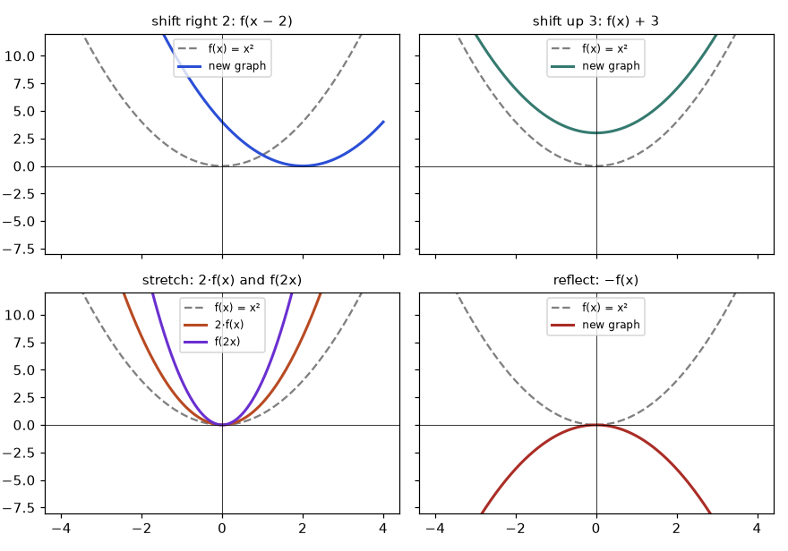
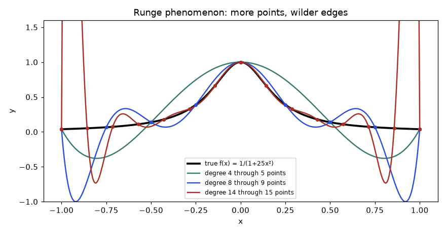
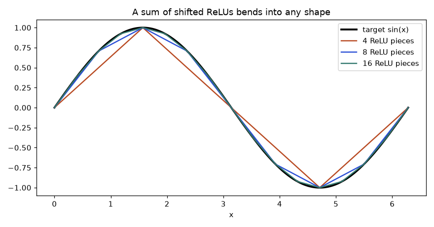

A delivery start-up charges customers a fixed pickup fee plus a price per kilometre. The finance lead asks three questions in one meeting. "What will a 14 km delivery cost?" "How far can we go before a $30 delivery loses us money?" "If we add a premium rate after 10 km, how does the price curve change?" Each question has the same shape: you feed a number in, a rule transforms it, and a number comes out. That rule is a function, and almost everything in data science is a function in disguise. A regression model is a function from features to a prediction. A loss is a function from parameters to an error. A neural network is a long chain of simple functions, one fed into the next.
This chapter teaches you to think in functions. You will learn what a function is (and is not), how to read and sketch a graph, and how to handle the families you meet every day: lines, parabolas, polynomials, rational functions and piecewise rules such as ReLU, absolute value, tax brackets and hinge loss. You will compose functions (the idea behind neural-net layers), invert them (the idea behind undoing a standardisation), shift and stretch them, and model real business questions such as break-even and supply versus demand.
After this chapter you will be able to: state the domain and range of a function by hand; graph it by hand and with matplotlib; fit a line through two points and interpret its slope in data; find the vertex of a parabola; evaluate polynomials efficiently; build piecewise and activation functions in NumPy; compose and invert functions; and explain, with a demo, why a high-degree polynomial overfits and why sums of ReLUs can approximate almost any shape. The last part of each section, labelled "Going deeper", is the expert layer: return to it after the basics feel easy. Chapter 1 gave you algebra and equations; here we use it to describe how one quantity depends on another.
Picture a vending machine. You press B3 (the input) and a specific snack drops out (the output). Press B3 again and you get the same snack. That reliability is the whole idea: a function gives exactly one output for each allowed input. Two different buttons may give the same snack, and that is fine. One button giving two different snacks is not a function.
The smallest example: f(x) = 3x + 2. Input 4: multiply by 3 to get 12, add 2 to get 14. So f(4) = 14. Input −1: 3 × (−1) = −3, then −3 + 2 = −1, so f(−1) = −1. The letter x is only a placeholder, a "slot" for whatever you feed in. f(t) = 3t + 2 is the same machine.
Some machines refuse certain inputs. Division by zero is undefined, and the square root of a negative number is not a real number. The natural domain is every real input the formula can accept. Find it by asking: what could break? Two things break formulas in this chapter: dividing by zero and taking an even root of a negative.
Problem 2.1.1 Find the domain of f(x) = 1/(x − 2).
| Idea | The only danger is a zero denominator. |
|---|---|
| Solve | x − 2 = 0 gives x = 2. |
| Answer | Domain: all real x except 2, written x ≠ 2. |
| Check | f(3) = 1/1 = 1 works. f(2) = 1/0 is undefined. |
Problem 2.1.2 Find the domain and range of g(x) = √(x − 1).
| Idea | The expression under the root must be 0 or more. |
|---|---|
| Domain | x − 1 ≥ 0 gives x ≥ 1. |
| Range | At x = 1 the output is 0. As x grows the root grows without bound. A square root is never negative. Range: y ≥ 0. |
| Check | g(1) = 0, g(2) = 1, g(10) = 3. All outputs are 0 or more. |
Problem 2.1.3 Find the domain of h(x) = √(x − 3) / (x − 5).
| Condition 1 | The root needs x − 3 ≥ 0, so x ≥ 3. |
|---|---|
| Condition 2 | The denominator needs x − 5 ≠ 0, so x ≠ 5. |
| Combine | Both must hold: x ≥ 3 and x ≠ 5. |
| Answer | [3, 5) ∪ (5, ∞). Check: h(4) = 1/(−1) = −1 works, h(5) fails, h(7) = 2/2 = 1 works. |
Problem 2.1.4 Find the range of f(x) = x2 + 1 for all real x.
| Idea | A square is never negative, so x2 ≥ 0. |
|---|---|
| Add 1 | x2 + 1 ≥ 1. |
| Reach | The value 1 occurs at x = 0, and any larger value y occurs at x = ±√(y − 1). |
| Answer | Range: y ≥ 1. |
In real data work the domain also has a meaning side. A function "delivery cost from distance" accepts a distance of −5 km mathematically, but the real world does not. So you also write the practical domain, here d ≥ 0. Forgetting it is how models end up predicting a negative number of customers.
A Python function is the same machine. def gives it a name; lambda makes a small anonymous one. NumPy lets you feed an entire array in at once, which is called vectorisation: the function is applied to every element with no explicit loop.
import numpy as np
def price(km):
return 5 + 2 * km # fixed fee 5, plus 2 per km
square = lambda x: x ** 2 # a tiny anonymous machine
print(price(0), price(10))
print(square(7))
print(list(map(price, [0, 5, 10, 20]))) # loop style
km = np.array([0, 5, 10, 20])
print(price(km)) # vectorised: no loop5 25
49
[5, 15, 25, 45]
[ 5 15 25 45]The same price function worked on a single number and on an array, because + and * act elementwise on NumPy arrays. This is why pandas columns can be transformed in one line: df["cost"] = 5 + 2 * df["km"].
import numpy as np
x = np.array([4.0, -1.0, 9.0])
with np.errstate(invalid="ignore"): # silence the warning, keep the NaN
print(np.sqrt(x)) # outside the domain gives nan, not an error
print(np.isnan(np.sqrt(np.array([4.0, 1.0]))).any())[ 2. nan 3.]
FalseOutside its domain, NumPy does not stop with an error: it returns nan ("not a number") and carries on. That NaN will silently poison a mean or a model fit later. Checking the domain before applying a function (for example, filtering x >= 0 before a square root) is a data-cleaning habit worth building now.
np.sqrt or np.log and you get NaN or −inf quietly. Always ask: what is the domain of the transform, and does my data respect it?Functions can have more than one input (f(x, y) = x2 + y2) and more than one output (a function from R3 to R2). A machine-learning model is typically f: Rd → R, where d is the number of features. The mathematical notion also separates the function from its formula: f(x) = (x2 − 1)/(x − 1) and g(x) = x + 1 have the same values everywhere except x = 1, where f is undefined. Two formulas with different domains are different functions. In code, a function can also be impure (it reads a global, uses random numbers, or writes to disk). A mathematical function always returns the same output for the same input; when you write def blocks for modelling, aim to keep them pure in this sense so they can be tested and reasoned about.
A table lists input and output pairs. A graph draws those pairs as points on a map. The coordinate plane has a horizontal axis (x, the input) and a vertical axis (y = f(x), the output). The point (3, 5) means: go 3 to the right, then 5 up. Negative numbers go left and down. The graph of f is the set of all points (x, f(x)). Reading a graph means answering "what height is the curve above this x?"
The method is plain: pick several x values, compute y for each, plot the points, join them smoothly. Pick enough points around anything interesting, such as where the function changes direction or crosses an axis.
Problem 2.2.1 Graph f(x) = x2 − 2x − 3 for x from −2 to 4.
| Step 1 | x = −2: 4 + 4 − 3 = 5. x = −1: 1 + 2 − 3 = 0. x = 0: −3. |
|---|---|
| Step 2 | x = 1: 1 − 2 − 3 = −4. x = 2: 4 − 4 − 3 = −3. |
| Step 3 | x = 3: 9 − 6 − 3 = 0. x = 4: 16 − 8 − 3 = 5. |
| Plot | Points (−2,5), (−1,0), (0,−3), (1,−4), (2,−3), (3,0), (4,5). They form a U shape, symmetric about x = 1. |
| Read | Lowest point (1, −4). Crosses the x-axis at x = −1 and x = 3 (the roots), and the y-axis at y = −3. |
Two special points are worth naming. The y-intercept is where the graph crosses the y-axis: set x = 0. The x-intercepts (roots, zeros) are where it crosses the x-axis: set f(x) = 0 and solve, which is exactly the equation solving from Chapter 1.
Now the same graph by code. matplotlib draws points joined by straight segments, so you need many closely spaced x values (np.linspace) for a smooth curve.
import numpy as np
f = lambda x: x**2 - 2*x - 3
x = np.arange(-2, 5) # -2, -1, 0, 1, 2, 3, 4
for xi, yi in zip(x, f(x)):
print(xi, yi)
print("lowest value:", f(x).min(), "at x =", x[f(x).argmin()])-2 5
-1 0
0 -3
1 -4
2 -3
3 0
4 5
lowest value: -4 at x = 1To produce the picture, you would add three lines: import matplotlib.pyplot as plt, then xs = np.linspace(-2, 4, 200); plt.plot(xs, f(xs)); plt.show(). Always label axes and title; a chart without labelled axes is a riddle.
Problem 2.2.2 A data story: a table shows (hours studied, exam score) = (1, 52), (2, 58), (3, 64), (4, 70). Is score a function of hours? What does the graph look like?
| Check | Each hours value appears once, so each input has one output. In this table, yes. |
|---|---|
| Pattern | Score rises by 6 for each extra hour: 52, 58, 64, 70. |
| Graph | Four points on a straight line rising 6 per step to the right. |
| Warning | Real data has repeated x values with different y values (two students study 3 hours and score 61 and 67). Then score is not a function of hours in the raw data; a model summarises it with a function (for example, the average score at each hour). See the Statistics document for how regression handles this. |
When you read a graph professionally, check five things in order: (1) the axis labels and units; (2) the scale (linear or logarithmic: Chapter 3); (3) where the curve is increasing or decreasing; (4) where it crosses the axes; (5) what happens at the ends. Misleading graphs usually cheat on (1) or (2): a truncated y-axis that starts at 90 instead of 0 makes a 2 percent change look like a collapse. Also remember that a plotted curve between your sample points is an interpolation; the data only exists at the dots.
A taxi charges a pickup fee of $5 and $2 per kilometre. After 0 km you owe $5. After 1 km, $7. After 2 km, $9. Every extra kilometre adds the same $2. A quantity that changes by a constant amount for each unit of input is linear. The rule is cost = 5 + 2 × km, or in function notation f(x) = 2x + 5.
Given two points (x1, y1) and (x2, y2) on a line, the slope is rise over run:
Then find b by plugging one point into y = mx + b. Or use the point-slope form y − y1 = m(x − x1).
Problem 2.3.1 A courier charges $11 for 3 km and $21 for 8 km. Assume the price is linear. Find the price function and the price for 14 km.
| Slope | m = (21 − 11)/(8 − 3) = 10/5 = 2 dollars per km. |
|---|---|
| Intercept | 11 = 2 × 3 + b, so b = 11 − 6 = 5. |
| Function | f(x) = 2x + 5. |
| Check | f(8) = 16 + 5 = 21 matches the second point. |
| Answer | f(14) = 28 + 5 = $33. |
Problem 2.3.2 A marketing team spent $10k on ads and sold 120 units; spent $30k and sold 200 units. Find the line, interpret the slope and intercept.
| Slope | m = (200 − 120)/(30 − 10) = 80/20 = 4 units per $1k. |
|---|---|
| Intercept | 120 = 4 × 10 + b, so b = 80. |
| Function | sales = 4 × spend + 80. |
| Meaning | Each extra $1k of ads is associated with 4 more units. With zero ad spend the line predicts 80 units (baseline sales from word of mouth, if the line holds that far). |
| Caution | Check that x = 0 is inside the range of your data (10 to 30 here). It is not, so the intercept 80 is an extrapolation, a guess outside what you observed. |
Problem 2.3.3 Two lines: y = 2x + 5 and a second line through (0, 1) that is perpendicular. Find the second line.
| Rule | Perpendicular lines have slopes whose product is −1: m2 = −1/m1. |
|---|---|
| Compute | m2 = −1/2. |
| Line | Through (0, 1), so b = 1: y = −x/2 + 1. |
| Check | 2 × (−1/2) = −1. Parallel lines would instead share the same slope. |
The same two-point calculation in code, then a best-fit line through noisy points with np.polyfit:
import numpy as np
# two points -> exact line
x1, y1, x2, y2 = 3, 11, 8, 21
m = (y2 - y1) / (x2 - x1)
b = y1 - m * x1
print("slope", m, "intercept", b, "f(14) =", m * 14 + b)
# noisy points -> best-fit line (least squares)
x = np.array([1, 2, 3, 4, 5])
y = np.array([2.1, 3.9, 6.2, 7.8, 10.1])
slope, intercept = np.polyfit(x, y, 1)
print(round(slope, 4), round(intercept, 4))slope 2.0 intercept 5.0 f(14) = 33.0
1.99 0.05The best-fit numbers can be checked by hand. The mean of x is 3 and the mean of y is 30.1/5 = 6.02. The slope is the sum of (x − 3) × y divided by the sum of (x − 3)2. The top: (−2)(2.1) + (−1)(3.9) + 0 + (1)(7.8) + (2)(10.1) = −4.2 − 3.9 + 7.8 + 20.2 = 19.9. The bottom: 4 + 1 + 0 + 1 + 4 = 10. Slope = 1.99. Intercept = 6.02 − 1.99 × 3 = 6.02 − 5.97 = 0.05. This is exactly what the code printed. The theory of why this recipe picks the "best" line is in Chapter 7 and the Statistics document.
Strictly, f(x) = 2x + 5 is an affine function, not a linear one in the linear-algebra sense. A linear function must satisfy f(a + b) = f(a) + f(b) and f(ca) = c·f(a). Test: f(1 + 2) = f(3) = 11, but f(1) + f(2) = 7 + 9 = 16. The intercept breaks additivity. Only f(x) = mx is truly linear. Machine-learning people say "linear layer" for Wx + b anyway, and you will see in Chapter 6 how a bias can be absorbed into the weights by adding a constant feature.
A deeper reason lines matter in AI: composing lines gives a line. If f(x) = 2x + 1 and g(x) = 3x − 4, then f(g(x)) = 2(3x − 4) + 1 = 6x − 7, another line. So ten stacked linear layers collapse into a single linear layer, and the network can only draw straight boundaries. That is why neural nets need a non-linear function between layers (Section 2.5). Finally, the slope of a line is its derivative, constant everywhere; for a curve the slope changes from point to point, which is the subject of Chapter 10.
Throw a ball up. Its height does not rise at a constant rate: it rises quickly, slows, stops, then falls. Such curved behaviour is described by a quadratic, f(x) = ax2 + bx + c with a ≠ 0. Its graph is a parabola: a U (if a > 0) or an upside-down U (if a < 0). The turning point, the lowest or highest point, is the vertex.

How to read it: on the left, the steepest line has slope 2 and the falling line has slope −1; all pass through (0, 1). On the right, the dashed vertical line x = 2 is the axis of symmetry; the curve is a mirror image on both sides, and it touches y = 0 at x = 1 and x = 3.
By symmetry, the vertex sits exactly halfway between the two roots. The roots of ax2 + bx + c are (−b ± √(b2 − 4ac))/(2a) (Chapter 1), whose midpoint is −b/(2a). So:
Problem 2.4.1 Find the vertex and roots of f(x) = x2 − 4x + 3.
| Vertex x | a = 1, b = −4: x = 4/2 = 2. |
|---|---|
| Vertex y | f(2) = 4 − 8 + 3 = −1. Vertex (2, −1), a minimum since a > 0. |
| Roots | x2 − 4x + 3 = (x − 1)(x − 3) = 0, so x = 1 or x = 3. |
| Check | Midpoint of 1 and 3 is 2, matching the vertex x. |
Problem 2.4.2 A shop's weekly profit at price p dollars is P(p) = −2p2 + 40p − 120. Which price maximises profit, and at which prices does it break even?
| Vertex x | a = −2, b = 40: p = −40/(2 × (−2)) = −40/(−4) = 10. |
|---|---|
| Max profit | P(10) = −200 + 400 − 120 = 80. |
| Break-even | Solve −2p2 + 40p − 120 = 0. Divide by −2: p2 − 20p + 60 = 0. Discriminant = 400 − 240 = 160. p = (20 ± √160)/2 = 10 ± √40 ≈ 10 ± 6.325. |
| Answer | Best price $10 for a $80 profit. Profit is positive only between about $3.68 and $16.32. |
Problem 2.4.3 (ML story) A model predicts y = w·x. Data: x = 1, 2, 3 and y = 2, 4, 7. The squared error summed over the points is L(w) = (2 − w)2 + (4 − 2w)2 + (7 − 3w)2. Find the w with the smallest error.
| Expand | L(w) = (4 − 4w + w2) + (16 − 16w + 4w2) + (49 − 42w + 9w2) = 14w2 − 62w + 69. |
|---|---|
| Vertex | w = 62/(2 × 14) = 62/28 ≈ 2.2143. |
| Min error | L = 69 − 622/(4 × 14) = 69 − 3844/56 ≈ 69 − 68.6429 = 0.3571 (exactly 5/14). |
| Meaning | The loss, as a function of the weight, is a parabola. "Training" in this tiny model is finding its vertex. |
import numpy as np
x = np.array([1, 2, 3]); y = np.array([2, 4, 7])
loss = lambda w: np.sum((y - w * x) ** 2)
w_star = 62 / 28 # vertex formula
print(round(w_star, 4), round(loss(w_star), 4))
ws = np.linspace(0, 5, 5001) # brute-force check on a fine grid
best = ws[np.argmin([loss(w) for w in ws])]
print(round(best, 4))
# profit parabola
P = lambda p: -2 * p**2 + 40 * p - 120
print(P(10), np.round(np.roots([-2, 40, -120]), 3))2.2143 0.3571
2.214
80 [16.325 3.675]A polynomial of degree n is a sum of powers of x up to xn: p(x) = anxn + … + a1x + a0. Lines are degree 1, parabolas degree 2, cubics degree 3. Facts worth memorising: a degree n polynomial has at most n real roots and at most n − 1 turning points; for large |x| the highest power dominates (end behaviour), so an even degree with positive leading coefficient goes up on both ends, while an odd degree goes down on one side and up on the other.
Problem 2.4.4 Evaluate p(x) = x3 − 6x2 + 11x − 6 at x = 4, then find its roots.
| Direct | 64 − 96 + 44 − 6 = 6. |
|---|---|
| Horner | Rewrite as ((x − 6)x + 11)x − 6. At x = 4: (4 − 6) = −2; −2 × 4 = −8; −8 + 11 = 3; 3 × 4 = 12; 12 − 6 = 6. Same answer with 3 multiplications instead of 6. |
| Roots | Try x = 1: 1 − 6 + 11 − 6 = 0. So (x − 1) is a factor. Dividing gives x2 − 5x + 6 = (x − 2)(x − 3). |
| Answer | p(x) = (x − 1)(x − 2)(x − 3), roots 1, 2, 3. Three roots, degree 3: the maximum. |
import numpy as np
coef = [1, -6, 11, -6] # highest power first
print(np.polyval(coef, 4)) # Horner's method inside
print(np.sort(np.roots(coef)).round(6))
def horner(coefs, x):
result = 0
for c in coefs: # one multiply and one add per coefficient
result = result * x + c
return result
print(horner(coef, 4))6
[1. 2. 3.]
6A rational function is a polynomial divided by a polynomial. Their trademark is the asymptote: a line the graph approaches but never touches. For f(x) = 1/(x − 2), the denominator is zero at x = 2, so there is a vertical asymptote there: near x = 2.001, f = 1000; near x = 2.00001, f = 100,000. Far away, for x = 1000, f ≈ 0.001, so y = 0 is a horizontal asymptote.
Problem 2.4.5 A factory has fixed costs of $500 per day and a cost of $4 per unit. The average cost per unit is A(n) = (500 + 4n)/n. Evaluate and describe it.
| Simplify | A(n) = 500/n + 4. |
|---|---|
| n = 100 | 5 + 4 = 9. |
| n = 500 | 1 + 4 = 5. |
| n = 1000 | 0.5 + 4 = 4.5. |
| Meaning | The average cost falls toward $4 (horizontal asymptote) because the fixed cost is spread over more units. It never reaches 4. Near n = 0 it blows up. This is the economy of scale. |
Problem 2.4.6 Simplify g(x) = (x2 − 1)/(x − 1) and state where it is defined.
| Factor | x2 − 1 = (x − 1)(x + 1). |
|---|---|
| Cancel | g(x) = x + 1, valid when x ≠ 1. |
| Domain | x ≠ 1. The graph is the line y = x + 1 with a single hole at (1, 2). |
Polynomials are the first functions people reach for in modelling because they are easy to add, multiply and evaluate, and (Section 2.8) because a smooth function can be approximated by one near a point: that is the Taylor series of Chapter 11. In scikit-learn, PolynomialFeatures builds the columns x, x2, x3, so that a linear model in those columns fits a curved function of x. The model is linear in its coefficients even though it is non-linear in x. That distinction is central for the whole of regression.
Rational functions show up as soft versions of hard rules: sigmoid and softmax (Chapter 3) are quotients, and the "softsign" activation x/(1 + |x|) is a rational function of |x|. Numerically, rational functions are the place to watch for division by a tiny number: 1/(x − 2) at x = 2.0000001 is about 10 million, so a feature that is almost zero in a denominator (a ratio of rates, for example) can dominate a model unless you clip or regularise it.
Income tax is a good picture. Earn up to $20k and pay nothing. Between $20k and $50k, pay 10 percent of the part above $20k. Above $50k, pay 30 percent of the part above $50k, on top of what you owed for the lower bands. One input, but the rule changes by zone. A function defined by several formulas on different intervals is called piecewise.
The "3" in the last piece is the full tax from the middle band: 10 percent of 30 (the width of 20 to 50) is 3. Without it the tax would suddenly drop at 50 and the function would be unfair and discontinuous.

How to read it: each curve is built from straight pieces. Where the pieces meet is a kink (a corner). The step function is the only one with a gap: it jumps from 0 to 1 at x = 0. The tax curve bends upward twice, at 20 and at 50, because the rate rises.
(df.x >= 0).astype(int).Problem 2.5.1 Compute the tax for incomes $35k and $80k with the schedule above.
| x = 35 | Middle band: 0.1 × (35 − 20) = 0.1 × 15 = 1.5. |
|---|---|
| x = 80 | Top band: 3 + 0.3 × (80 − 50) = 3 + 0.3 × 30 = 3 + 9 = 12. |
| Check | At x = 50 the middle formula gives 0.1 × 30 = 3 and the top formula gives 3 + 0 = 3. The pieces meet. |
| Answer | $1.5k and $12k. Effective rate at 80: 12/80 = 15 percent, lower than the 30 percent top rate. |
Problem 2.5.2 Compute hinge loss for (label +1, score 2.5), (label +1, score 0.4) and (label −1, score 0.5).
| Case 1 | m = 1 × 2.5 = 2.5. Loss = max(0, 1 − 2.5) = max(0, −1.5) = 0. |
|---|---|
| Case 2 | m = 0.4. Loss = max(0, 0.6) = 0.6. Correct side, but not confident enough. |
| Case 3 | m = (−1) × 0.5 = −0.5. Loss = max(0, 1.5) = 1.5. Wrong side of the boundary. |
| Meaning | Hinge loss is zero for confident right answers and grows linearly for mistakes. It is the loss behind support vector machines. |
Problem 2.5.3 Predictions are 11, 10, 9 for true values 10, 12, 9. Compute mean absolute error and mean squared error.
| Errors | (pred − true) = 1, −2, 0. |
|---|---|
| MAE | |1| + |−2| + |0| = 3, divided by 3 = 1.0. |
| MSE | 1 + 4 + 0 = 5, divided by 3 ≈ 1.6667. |
| Meaning | Squaring punishes the error of 2 four times as hard as the error of 1; the absolute value punishes it only twice as hard. |
import numpy as np
def tax(x):
# np.where picks the formula by zone; later conditions override earlier ones
return np.where(x <= 20, 0.0, np.where(x <= 50, 0.1 * (x - 20), 3 + 0.3 * (x - 50)))
print(tax(np.array([10, 35, 50, 80])))
hinge = lambda y, s: np.maximum(0, 1 - y * s)
print(hinge(np.array([1, 1, -1]), np.array([2.5, 0.4, 0.5])))
true = np.array([10, 12, 9]); pred = np.array([11, 10, 9])
print(np.mean(np.abs(pred - true)), round(np.mean((pred - true) ** 2), 4))[ 0. 1.5 3. 12. ]
[0. 0.6 1.5]
1.0 1.6667np.where branches use the wrong base (forgetting the "+ 3" constant creates a drop at x = 50).A neuron computes z = w·x + b (a line) and then passes z through an activation function to decide how strongly to "fire". Without the activation the neuron is just a line.
| Function | Formula | Shape | Remark |
|---|---|---|---|
| Linear (identity) | f(z) = z | straight line | No new power. Stacking collapses to one line. |
| Step | 1 if z ≥ 0 else 0 | a jump | The original perceptron. Flat almost everywhere, so no gradient to learn from. |
| ReLU | max(0, z) | flat then rising | Cheap, default in many deep nets. Negative inputs give 0 and zero slope ("dead" neuron). |
| Leaky ReLU | z if z > 0 else 0.1z | two slopes | Keeps a small slope for negatives. |
Problem 2.5.4 A neuron has weight 0.5 and bias −1. Compute the output for x = 4 and x = 1 with ReLU and with leaky ReLU (slope 0.1).
| x = 4 | z = 0.5 × 4 − 1 = 1. ReLU: 1. Leaky: 1. |
|---|---|
| x = 1 | z = 0.5 − 1 = −0.5. ReLU: 0. Leaky: 0.1 × (−0.5) = −0.05. |
| Meaning | The neuron is "on" for x > 2 (where z > 0). x = 2 is the kink: z = 0. |
import numpy as np
relu = lambda z: np.maximum(0, z)
leaky = lambda z: np.where(z > 0, z, 0.1 * z)
step = lambda z: (z >= 0).astype(int)
x = np.array([4.0, 1.0])
z = 0.5 * x - 1
print(z, relu(z), leaky(z), step(z))[ 1. -0.5] [1. 0.] [ 1. -0.05] [1 0]max(0, z) on an array. Wrong: max(0, np.array([4.0, -1.0])) raises an "ambiguous truth value" error. Right: np.maximum(0, z) works elementwise. Likewise, if x > 0 inside a function breaks when x is an array; use np.where.Continuous or not. A function is continuous at a point if you can draw through it without lifting the pen. Absolute value and ReLU are continuous (with a corner). The step has a jump. 1/(x − 2) has an infinite blow-up at 2. (x2 − 1)/(x − 1) has a removable hole at 1. The precise definition uses limits (Chapter 10). The practical impact: gradient-based training needs slopes. The step function has slope 0 everywhere it is defined, which gives a learning algorithm no direction to move; this is why smooth or piecewise-linear activations replaced the step in deep learning. ReLU has a kink at 0 where the slope is undefined; in practice, frameworks simply pick 0 for the slope there and it works fine.
A subtle point on tax: a bracket schedule is continuous and piecewise linear, which is the same family as ReLU sums (Section 2.8). Indeed tax(x) = 0.1·ReLU(x − 20) + 0.2·ReLU(x − 50): each bracket adds a slope change at its threshold. Check at x = 80: 0.1 × 60 + 0.2 × 30 = 6 + 6 = 12 ✓.
Put two machines in a row. The first converts kilometres to metres; the second converts metres to a delivery fee. The output of the first is the input of the second. That is composition, written (f ∘ g)(x) = f(g(x)): apply g first, then f. Read it from the inside out.
Problem 2.6.1 Let f(x) = x2 and g(x) = x + 3. Compute f(g(2)), g(f(2)), and the formulas for f(g(x)) and g(f(x)).
| f(g(2)) | g(2) = 5, then f(5) = 25. |
|---|---|
| g(f(2)) | f(2) = 4, then g(4) = 7. |
| Formulas | f(g(x)) = (x + 3)2 = x2 + 6x + 9. g(f(x)) = x2 + 3. |
| Lesson | 25 ≠ 7. Order matters: composition is not commutative. |
Problem 2.6.2 Domain of a composition. f(x) = √x and g(x) = x − 4. Find the domain of f(g(x)).
| Formula | f(g(x)) = √(x − 4). |
|---|---|
| Condition | x − 4 ≥ 0, so x ≥ 4. (g itself accepts all numbers, but f cannot take negatives.) |
| Answer | [4, ∞). A composition is only as permissive as its strictest step. |
Problem 2.6.3 (A two-layer network in one variable.) The hidden unit is h = ReLU(2x − 1) and the output is y = 3h + 0.5. Find y for x = 2 and x = 0, and describe the composite function.
| x = 2 | 2x − 1 = 3; h = ReLU(3) = 3; y = 3 × 3 + 0.5 = 9.5. |
|---|---|
| x = 0 | 2x − 1 = −1; h = ReLU(−1) = 0; y = 0 + 0.5 = 0.5. |
| Formula | y = 3·max(0, 2x − 1) + 0.5: flat at 0.5 for x ≤ 0.5, then rising with slope 6. |
| Meaning | Line, then ReLU, then line. The ReLU bends the otherwise-straight result at x = 0.5. |
import numpy as np
f = lambda x: x ** 2
g = lambda x: x + 3
compose = lambda outer, inner: (lambda x: outer(inner(x)))
print(compose(f, g)(2), compose(g, f)(2))
layer1 = lambda x: np.maximum(0, 2 * x - 1)
layer2 = lambda h: 3 * h + 0.5
net = compose(layer2, layer1)
print(net(2), net(0), net(np.array([0, 0.5, 1, 2])))25 7
9.5 0.5 [0.5 0.5 3.5 9.5]An inverse function undoes a function: f⁻¹(f(x)) = x and f(f⁻¹(y)) = y. (The −1 is not a power: f⁻¹(x) is not 1/f(x).) To find it: write y = f(x), solve for x, then swap names.
Problem 2.6.4 Invert f(x) = 2x + 5 and use it to find which distance costs $21.
| Step 1 | y = 2x + 5. |
|---|---|
| Step 2 | y − 5 = 2x, so x = (y − 5)/2. |
| Inverse | f⁻¹(y) = (y − 5)/2. |
| Answer | f⁻¹(21) = 16/2 = 8 km. Check: f(8) = 21 ✓. |
Problem 2.6.5 Celsius to Fahrenheit is F = 1.8C + 32. Invert it and test on 212 and −40.
| Invert | C = (F − 32)/1.8. |
|---|---|
| F = 212 | (212 − 32)/1.8 = 180/1.8 = 100. |
| F = −40 | (−40 − 32)/1.8 = −72/1.8 = −40. The two scales agree at −40. |
Problem 2.6.6 (Data story.) Standardisation z = (x − μ)/σ with μ = 50 and σ = 10. Find z for x = 65 and invert it.
| Forward | z = (65 − 50)/10 = 1.5. |
|---|---|
| Inverse | x = σz + μ = 10 × 1.5 + 50 = 65. |
| Meaning | This inverse is what scaler.inverse_transform does after a model predicts in standardised units. |
Not every function has an inverse. f(x) = x2 on all real x sends both 3 and −3 to 9, so given the output 9 you cannot know the input. A function is one-to-one if different inputs always give different outputs. Visual test: the horizontal line test. Any horizontal line hitting the graph twice means not one-to-one. Restrict the domain to x ≥ 0 and x2 becomes invertible, with inverse √x. On a graph, f⁻¹ is the mirror image of f across the line y = x.
import numpy as np
f = lambda x: 2 * x + 5
f_inv = lambda y: (y - 5) / 2
xs = np.array([0, 3, 8, 14.5])
print(f_inv(f(xs))) # should return xs
mu, sigma = 50, 10
z = (np.array([65, 40, 50]) - mu) / sigma
print(z, z * sigma + mu)
print(np.cbrt(27), 3 ** 3) # cube and cube root undo each other[ 0. 3. 8. 14.5]
[ 1.5 -1. 0. ] [65. 40. 50.]
3.0 27Take any graph y = f(x). Modifying the formula moves the picture in predictable ways.
| New formula | What happens to the graph |
|---|---|
| f(x) + k | moves up by k (down if k is negative) |
| f(x − h) | moves right by h (left if h is negative) |
| a·f(x) | stretches vertically by a; negative a also flips it upside down |
| f(cx) | squeezes horizontally by a factor c (stretches if c < 1) |
| −f(x) | reflection across the x-axis |
| f(−x) | reflection across the y-axis |

How to read it: in the top-left panel, f(x − 2) is the same U moved two units to the right; its bottom sits at x = 2. In the bottom-left, 2·f(x) = 2x² is twice as tall at every x, while f(2x) = 4x² is the same U squeezed sideways, so it is even steeper; both keep the vertex at the origin. The bottom-right flips the U into an arch.
Problem 2.6.7 Describe g(x) = 2(x − 3)2 + 1 as a transformation of f(x) = x2 and find g(4).
| Inside | (x − 3): shift right 3. |
|---|---|
| Outside | 2 × : vertical stretch by 2; + 1: shift up 1. |
| Vertex | (3, 1). |
| Check | g(4) = 2 × 1 + 1 = 3. g(3) = 1 is the minimum. |
A function is even if f(−x) = f(x) (mirror symmetry across the y-axis): x2, |x|, cos x. It is odd if f(−x) = −f(x) (rotational symmetry about the origin): x, x3, sin x. Many functions are neither.
Problem 2.6.8 Classify f(x) = x3 − x, h(x) = x4 + x2 and k(x) = x2 + x.
| f | f(2) = 8 − 2 = 6; f(−2) = −8 + 2 = −6 = −f(2). Odd (in general f(−x) = −x³ + x = −f(x)). |
|---|---|
| h | h(−x) = x4 + x2 = h(x). Even. |
| k | k(2) = 6; k(−2) = 4 − 2 = 2. Not equal and not negatives. Neither. |
A function is increasing on an interval if x1 < x2 implies f(x1) < f(x2) (it climbs as you go right) and decreasing if the inequality reverses. A function that is strictly increasing everywhere (or strictly decreasing everywhere) is one-to-one and therefore invertible.
Depth is composition. A deep network is fL(…f2(f1(x))…), each fi being "affine map, then activation". The domain and range of each stage must fit the next; shapes and number ranges are the practical form of that rule (Chapter 6 covers shapes, Chapter 13 shows how to differentiate through the whole chain).
Information loss. ReLU sends −3 and −5 both to 0, so it is not one-to-one and cannot be inverted: once a signal is zeroed, it is gone. Sigmoid is strictly increasing, so it is invertible (its inverse is the "logit", Chapter 3). Monotonic (always increasing) transformations matter in statistics: rank-based measures such as Spearman correlation and the ROC AUC do not change if you apply an increasing function to all your scores, because ordering is preserved. Interview version: "Why can't you recover the input of a ReLU?" Answer: it is many-to-one on the negative side.
Standardisation is a shift and a scale: subtract μ (shift), divide by σ (scale). It changes the picture's position and zoom, not its shape. This is why a standardised histogram looks the same as the original with relabelled axes.
Modelling means choosing a function that describes how one quantity depends on another, and then using it to answer a question. The loop is always the same: (1) name the input and output with units; (2) look at the data or the story and pick a family (line, parabola, piecewise); (3) find the numbers in the formula; (4) check the model against data it has not seen; (5) state where it stops being valid. Let us run the loop on the delivery start-up.
Model 1: cost against distance. Seven past deliveries (distance in km, cost in dollars) look nearly linear:
import numpy as np
d = np.array([1, 2, 4, 5, 7, 8, 10.0])
cost = np.array([5.6, 7.1, 10.2, 11.4, 14.6, 16.1, 19.3])
m, b = np.polyfit(d, cost, 1)
r2 = np.corrcoef(d, cost)[0, 1] ** 2 # how much variation the line explains
print("slope", round(m, 4), "intercept", round(b, 4), "R2", round(r2, 4))
print("predict 6 km:", round(m * 6 + b, 2))
print("largest miss:", round(np.max(np.abs(cost - (m * d + b))), 2))slope 1.5137 intercept 4.0417 R2 0.9995
predict 6 km: 13.12
largest miss: 0.21Reading the output: each extra kilometre costs about $1.51 and the pickup fee is about $4.04. The R2 of 0.9995 means the line explains almost all the variation, and no point is more than about 20 cents from the line. That supports a linear model inside the observed range of 1 to 10 km. Outside that range we have no evidence.
Model 2: a piecewise price. The company decides on the rule C(d) = 4 + 1.5d for d ≤ 10 km and 19 + 2.5(d − 10) beyond. The "19" is the cost at 10 km: 4 + 15 = 19, which keeps the price continuous.
Problem 2.7.1 Find the price for 14 km and the distance that costs exactly $30.
| 14 km | 14 > 10, so use the second piece: 19 + 2.5 × 4 = 19 + 10 = $29. |
|---|---|
| Which piece? | The price at 10 km is $19, below 30, so the answer lies in the second piece. |
| Solve | 19 + 2.5(d − 10) = 30; 2.5(d − 10) = 11; d − 10 = 4.4; d = 14.4 km. |
| Check | 19 + 2.5 × 4.4 = 19 + 11 = 30 ✓. |
Model 3: break-even. Revenue R(n) = price × n and cost C(n) = fixed + variable × n are two lines. Break-even is the n where they cross: R(n) = C(n).
Problem 2.7.2 Price $20 per delivery, variable cost $8 per delivery, fixed cost $12,000 per month. Find the break-even volume, then redo it if the price falls to $18.
| Setup | R(n) = 20n, C(n) = 12000 + 8n. |
|---|---|
| Equate | 20n = 12000 + 8n; 12n = 12000; n = 1000. |
| Check | R = 20,000 and C = 12,000 + 8,000 = 20,000 ✓. |
| New price | 18n = 12000 + 8n; 10n = 12000; n = 1200. |
| Meaning | The profit per unit (contribution) is price − variable cost: 12 then 10. Break-even = fixed / contribution. A $2 price cut raises the volume you must reach by 200 deliveries. |
Supply and demand. Demand falls as price rises; supply rises with price. In a simple linear market, demand is Qd = 100 − 2p and supply is Qs = 20 + 3p (quantity in units, p in dollars).
Problem 2.7.3 Find the equilibrium price and quantity, then the effect of a price floor of $20.
| Equate | 100 − 2p = 20 + 3p; 80 = 5p; p = 16. |
|---|---|
| Quantity | Qd = 100 − 32 = 68; Qs = 20 + 48 = 68 ✓. |
| Floor 20 | Qd = 100 − 40 = 60; Qs = 20 + 60 = 80. |
| Meaning | Suppliers want to sell 80 but buyers want only 60: a surplus of 20 units. |
import numpy as np
# break-even
fixed, price, var = 12000, 20, 8
print(fixed / (price - var), fixed / (18 - var))
# supply-demand intersection of two lines
demand = lambda p: 100 - 2 * p
supply = lambda p: 20 + 3 * p
p_eq = (100 - 20) / (2 + 3)
print(p_eq, demand(p_eq), supply(p_eq))
print(demand(20), supply(20), supply(20) - demand(20))
# piecewise delivery cost with np.where
C = lambda d: np.where(d <= 10, 4 + 1.5 * d, 19 + 2.5 * (d - 10))
print(C(np.array([5, 10, 14, 14.4])))1000.0 1200.0
16.0 68.0 68.0
60 80 20
[11.5 19. 29. 30. ]Choosing a family is the real modelling decision. Lines suit steady rates, parabolas suit one turning point (profit against price), rational functions suit "spread a fixed cost" effects, and piecewise functions suit rules with thresholds. Compare candidate models on data they have not been fitted to; a model that only looks good on its own training points is memorising. The next section shows exactly how that goes wrong. Modelling is also about units and sanity: slope units are (output unit)/(input unit), and a fitted function that predicts negative cost or negative demand is wrong somewhere, even if the fit statistic is excellent.
You can add two numbers and multiply a number by a constant. You can do the same to functions: (f + g)(x) = f(x) + g(x) and (c·f)(x) = c·f(x). If f(x) = x and g(x) = x2, then (f + g)(x) = x + x2 and (3f)(x) = 3x. The result is again a function.
Here is the insight that powers a lot of modern machine learning. Sample a function at fixed points and you get a list of numbers, a vector. At x = 0, 1, 2, 3, the function f(x) = x becomes (0, 1, 2, 3) and g(x) = x2 becomes (0, 1, 4, 9). Adding the functions adds the vectors: (0, 2, 6, 12). Scaling a function scales the vector. A set of functions closed under adding and scaling is a function space, and it behaves like the vector spaces of Chapters 5 to 7. The polynomials of degree at most 2 form a space with the three "building-block" functions 1, x, x2: every such polynomial is a combination a·1 + b·x + c·x2, just as every vector in 3D is a combination of three axes.
Problem 2.8.1 Sample f(x) = x and g(x) = x2 at x = 0, 1, 2, 3. Compute 2f − g as a vector, and measure how far f is from g with the root-mean-square gap.
| Vectors | f = (0, 1, 2, 3), g = (0, 1, 4, 9). |
|---|---|
| 2f − g | (0, 2, 4, 6) − (0, 1, 4, 9) = (0, 1, 0, −3). |
| Gap f − g | (0, 0, −2, −6). Squares: 0, 0, 4, 36. Mean = 40/4 = 10. Root = √10 ≈ 3.1623. |
| Meaning | A distance between functions, exactly the RMSE you use to compare a model's predictions to the truth. |
import numpy as np
x = np.array([0, 1, 2, 3])
f, g = x, x ** 2
print(f, g, 2 * f - g)
print(round(np.sqrt(np.mean((f - g) ** 2)), 4))[0 1 2 3] [0 1 4 9] [ 0 1 0 -3]
3.1623This is why fitting a model can be seen geometrically: the data is a point in a high-dimensional space, the model family is a subspace, and "best fit" is the closest point in that subspace (Chapter 5 for projection, Chapter 7 for the general least-squares picture).
A polynomial of degree n − 1 can pass exactly through any n points with different x values. Tempting: more points, higher degree, perfect fit. It fails in two ways. First, noise: a high-degree polynomial bends to chase every random wiggle. Second, even for a perfectly smooth function, equally spaced points lead to wild swings near the ends, discovered by Carl Runge for f(x) = 1/(1 + 25x2).

How to read it: the black bell is the truth. The degree-4 curve (teal) is smooth but crude. The degree-8 (blue) and degree-14 (red) curves match the dots exactly, yet swing far above and below the truth between the dots near x = ±1. The numbers below measure the worst gap on a fine grid, and compare it with simply joining the dots by straight segments (linear interpolation, a piecewise function).
import numpy as np
f = lambda x: 1 / (1 + 25 * x ** 2)
grid = np.linspace(-1, 1, 1001)
for n in (5, 9, 11, 15):
pts = np.linspace(-1, 1, n)
coef = np.polyfit(pts, f(pts), n - 1) # degree n-1 polynomial
poly_err = np.max(np.abs(np.polyval(coef, grid) - f(grid)))
line_err = np.max(np.abs(np.interp(grid, pts, f(pts)) - f(grid)))
print(f"{n} points: polynomial worst error {poly_err:.2f}, straight segments {line_err:.2f}")5 points: polynomial worst error 0.44, straight segments 0.18
9 points: polynomial worst error 1.05, straight segments 0.06
11 points: polynomial worst error 1.92, straight segments 0.07
15 points: polynomial worst error 7.19, straight segments 0.06The polynomial's worst error grows from about 0.44 to over 7 as the degree increases, while the straight segments stay around 0.06 to 0.07 (their error would shrink further with finer spacing, but for n = 9 to 15 it has already levelled off at this scale). Now the noisy-data version: ten noisy points from a true line, fitted with degrees 1, 3 and 9, and tested on fresh noisy points from the same line.
import numpy as np
rng = np.random.default_rng(0)
x = np.linspace(0, 1, 10)
y = 2 * x + 1 + rng.normal(0, 0.2, 10) # training data
xt = np.linspace(0.05, 0.95, 10)
yt = 2 * xt + 1 + rng.normal(0, 0.2, 10) # fresh test data
for deg in (1, 3, 9):
coef = np.polyfit(x, y, deg)
train = np.mean((np.polyval(coef, x) - y) ** 2)
test = np.mean((np.polyval(coef, xt) - yt) ** 2)
print(f"degree {deg}: train MSE {train:.4f}, test MSE {test:.4f}")degree 1: train MSE 0.0206, test MSE 0.0490
degree 3: train MSE 0.0095, test MSE 0.0633
degree 9: train MSE 0.0000, test MSE 0.1024Training error always falls as the degree rises, reaching essentially zero at degree 9 (ten points, ten coefficients: an exact interpolation). The test error, which measures usefulness, gets worse: the model has fitted the noise. This is overfitting. The cure is not "avoid polynomials" but "match the model's flexibility to the amount of data, and always judge on held-out data".
If polynomials misbehave, what can approximate any shape reliably? Sums of ReLUs. One ReLU is a hinge, a flat line that turns upward at a chosen point. Add three with the right weights and you get a triangular bump:
Check: x = 0 gives 0. x = 1 gives 1 − 0 + 0 = 1. x = 2 gives 2 − 2 + 0 = 0. x = 3 gives 3 − 4 + 1 = 0. So it is 0, climbs to 1 at x = 1, falls back to 0 at x = 2, and stays at 0 after. Each ReLU contributes a change of slope at its own knot: +1 at 0, −2 at 1 (so the slope goes 1 to −1), +1 at 2 (back to 0). Any continuous curve on an interval can be approximated by a chain of short straight segments, and any chain of straight segments is a sum of ReLUs with one ReLU per bend.

How to read it: the black sine wave is the target. With 4 pieces the approximation is a rough polygon; with 8 it hugs the curve; with 16 you can barely see the gap. Each added ReLU adds one bend.
import numpy as np
relu = lambda z: np.maximum(0, z)
bump = lambda x: relu(x) - 2 * relu(x - 1) + relu(x - 2)
print(bump(np.array([0, 0.5, 1, 1.5, 2, 3])))
xx = np.linspace(0, 2 * np.pi, 2001)
for k in (4, 8, 16):
knots = np.linspace(0, 2 * np.pi, k + 1)
slopes = np.diff(np.sin(knots)) / np.diff(knots)
y = np.sin(knots[0]) + slopes[0] * (xx - knots[0]) # first line
for i in range(1, k): # one ReLU per bend
y = y + (slopes[i] - slopes[i - 1]) * relu(xx - knots[i])
print(k, "ReLU pieces: worst error", round(np.max(np.abs(y - np.sin(xx))), 4))[0. 0.5 1. 0.5 0. 0. ]
4 ReLU pieces: worst error 0.2105
8 ReLU pieces: worst error 0.0704
16 ReLU pieces: worst error 0.0188Each doubling of the number of pieces cuts the worst error by a factor of about three to four, approaching four (the error of a straight segment of width h on a curve with curvature at most 1 is at most h2/8, and h halves). The statement behind this picture is the universal approximation theorem: a network with one hidden layer, a non-polynomial activation and enough hidden units can approximate any continuous function on a bounded region as closely as you like. Be precise about what it does not say: it does not say how many units you need (could be astronomically many), nor that training will find the weights, nor that the approximation works outside the region. Depth helps in practice because stacking layers builds complicated shapes with far fewer units than a single wide layer; there are known examples of functions that need exponentially many units if the network is shallow.
Continuous functions are the well-behaved ones: small changes in input give small changes in output, so the universal-approximation story applies. A discontinuous function such as the step or a threshold rule (approve a loan if score ≥ 600) has a jump. A ReLU sum can mimic a jump only by making a very steep ramp, so it needs ever-larger weights to approximate it better, and near the jump the error stays large however many units you add if you measure the worst case. In data work, thresholds in the data (tax brackets, age limits, eligibility cutoffs) are real discontinuities: a model that assumes smoothness blurs them, which is why a regression-discontinuity analysis in the Statistics document treats the jump itself as the object of study.
np.linspace.| Formula / pattern | Meaning |
|---|---|
| m = (y2 − y1)/(x2 − x1) | slope of a line through two points |
| vertex x = −b/(2a) | turning point of a parabola |
| (f ∘ g)(x) = f(g(x)) | apply g first, then f |
| f⁻¹(f(x)) = x | inverse undoes f; needs one-to-one |
| f(x − h) + k | shift right h, up k |
| f(−x) = f(x) or −f(x) | even or odd symmetry |
| ReLU(z) = max(0, z) | zero for negatives, identity for positives |
| break-even n = fixed / (price − variable cost) | volume where revenue meets cost |
| Σ ci·ReLU(x − ti) | piecewise-linear shape with a bend at each ti |
Problem 2.1 For f(x) = 3x + 2, compute f(−2) and f(0.5).
Answer: f(−2) = 3 × (−2) + 2 = −6 + 2 = −4. f(0.5) = 1.5 + 2 = 3.5.
Problem 2.2 Find the domain of f(x) = √(2x − 6).
Answer: Need 2x − 6 ≥ 0, so 2x ≥ 6 and x ≥ 3. Domain [3, ∞). Check: f(3) = 0, f(5) = 2.
Problem 2.3 A line passes through (2, 7) and (5, 16). Find its equation and the value at x = 10.
Answer: m = (16 − 7)/(5 − 2) = 9/3 = 3. b = 7 − 3 × 2 = 1. y = 3x + 1. Check at x = 5: 16 ✓. At x = 10: 31.
Problem 2.4 Find the vertex and roots of y = −x2 + 6x − 5.
Answer: a = −1, b = 6: x = −6/(−2) = 3; y = −9 + 18 − 5 = 4. Vertex (3, 4), a maximum. Roots: x2 − 6x + 5 = (x − 1)(x − 5) = 0, so x = 1, 5. Midpoint of the roots is 3 ✓.
Problem 2.5 With f(x) = 2x − 1 and g(x) = x2, compute f(g(3)) and g(f(3)).
Answer: g(3) = 9, f(9) = 17. f(3) = 5, g(5) = 25. They differ, so order matters.
Problem 2.6 Find the inverse of f(x) = (x + 4)/3 and evaluate it at 5.
Answer: y = (x + 4)/3 gives x = 3y − 4, so f⁻¹(x) = 3x − 4. f⁻¹(5) = 11. Check: f(11) = 15/3 = 5 ✓.
Problem 2.7 Describe g(x) = |x + 2| − 3 relative to |x| and find g(0).
Answer: |x + 2| = |x − (−2)|: shift left 2; −3: shift down 3. The corner is at (−2, −3). g(0) = |2| − 3 = −1.
Problem 2.8 Is f(x) = x·|x| even, odd or neither? What about h(x) = |x| + x2?
Answer: f(−x) = (−x)|−x| = −x|x| = −f(x): odd (test: f(2) = 4, f(−2) = −4). h(−x) = |x| + x2 = h(x): even.
Problem 2.9 Let B(x) = ReLU(x) − 2·ReLU(x − 1) + ReLU(x − 2). Compute B(0.5), B(1), B(1.5) and B(3).
Answer: B(0.5) = 0.5. B(1) = 1 − 0 + 0 = 1. B(1.5) = 1.5 − 2 × 0.5 + 0 = 0.5. B(3) = 3 − 4 + 1 = 0. A triangular bump of height 1 on [0, 2].
Problem 2.10 A product sells at $25, variable cost is $9 per unit and fixed cost is $8,000 per month. Find the break-even volume. If the price drops to $22, how many whole units are needed?
Answer: Contribution = 25 − 9 = 16; 8000/16 = 500 units. At $22: contribution 13; 8000/13 ≈ 615.38, so you need 616 whole units (615 units still leave a small loss: 615 × 13 = 7,995 < 8,000).
Problem 2.11 Compute the hinge loss for (label −1, score −0.3) and (label +1, score −1).
Answer: First: margin = (−1)(−0.3) = 0.3; loss = max(0, 1 − 0.3) = 0.7 (right side but inside the margin). Second: margin = −1; loss = max(0, 1 − (−1)) = 2 (wrong side).
Problem 2.12 Find the bug: relu = lambda z: max(0, z) followed by relu(np.array([3.0, -2.0])) raises an error. Why, and fix it.
Answer: Python's built-in max compares 0 with the whole array and needs a single True/False, so NumPy raises "truth value of an array is ambiguous". Use np.maximum(0, z), which compares elementwise and returns [3., 0.].
Problem 2.13 What does this print? f = lambda x: x**2 - 4; g = lambda x: x + 1; print(f(g(2)), g(f(2)))
Answer: f(g(2)) = f(3) = 9 − 4 = 5. g(f(2)) = g(0) = 1. It prints 5 1.
Problem 2.14 Equilibrium: demand Qd = 120 − 4p and supply Qs = 10 + 6p. Find the price and quantity.
Answer: 120 − 4p = 10 + 6p gives 110 = 10p, p = 11. Qd = 120 − 44 = 76; Qs = 10 + 66 = 76 ✓.
Problem 2.15 Is f(x) = x2 + 2x one-to-one on all real numbers? How can you restrict it so it is invertible, and what is the inverse then?
Answer: f(0) = 0 and f(−2) = 4 − 4 = 0: two inputs, one output, so not one-to-one. The vertex is at x = −2/2 = −1. Restrict to x ≥ −1. Complete the square: y = (x + 1)2 − 1, so x + 1 = √(y + 1) (positive root on this branch), giving f⁻¹(y) = √(y + 1) − 1. Check: f(1) = 3 and f⁻¹(3) = √4 − 1 = 1 ✓.
Problem 2.16 (Interview.) A colleague stacks 10 linear layers (no activation) and claims it is more expressive than one layer. Respond with a proof sketch and a number check.
Answer: Two layers: W2(W1x + b1) + b2 = (W2W1)x + (W2b1 + b2), which is one affine layer with weight W2W1. By induction ten layers also collapse to one. Number check in one dimension: f(x) = 2x + 1, g(x) = 3x − 4 compose to 2(3x − 4) + 1 = 6x − 7; at x = 2 both routes give 5: g(2) = 2, f(2) = 5, and 6 × 2 − 7 = 5. Only a non-linear activation between layers adds expressive power.
Problem 2.17 (Expert.) You fit a degree-9 polynomial through 10 noisy points and get a training error of 0. Explain why that is expected, why test error is higher, and give two fixes.
Answer: A degree-9 polynomial has 10 coefficients, exactly enough to hit 10 points, so zero training error is guaranteed whatever the data, noise included. It then swings between points to chase that noise (and near the ends, as in the Runge demo), so on new points the error is larger. Fixes: use a lower degree chosen by held-out error (validation), collect more data, or add regularisation, which penalises large coefficients (Chapter 14).
You are my patient, practical professor. I am a working professional moving into data roles, with only school-level math. Teach me functions, graphs and modelling: domain and range, lines (slope and intercept), parabolas and the vertex, polynomials, piecewise functions (ReLU, absolute value, hinge loss, tax brackets), composition, inverses, shifting and scaling graphs, and how sums of ReLUs approximate curves. Go one idea at a time. After each idea, give me a short example with real numbers, then ask me one question and wait for my answer before moving on. Start with an easy question, and make each next one harder. Correct me kindly and show the step I missed. After 10 questions, summarise my weak spots and give me 3 extra practice problems.
You are a careful reviewer of math homework. I will paste my working for a problem about functions (finding a domain, fitting a line through two points, finding a vertex, composing or inverting functions, or building a piecewise or ReLU function in NumPy). Check every line. For each error, quote my line, explain what is wrong in plain English, and show the corrected line with numbers. Then test my final answer by plugging it back in (for example, check an inverse by composing, or a line by plugging both points). If my Python code is wrong or silently produces NaN, explain why and fix it. Finish with one similar problem for me to try.
Act as an interviewer for a data science role. Ask me one question at a time about functions and modelling: why neural networks need non-linear activations, why ReLU is preferred to a step, how to find the vertex of a quadratic loss, what overfitting looks like with high-degree polynomials (Runge phenomenon), when a function has an inverse, what universal approximation does and does not guarantee, and how to interpret the slope of a fitted line. Wait for my answer. Then score it from 1 to 5, point out missing ideas, and give a model answer in 4 sentences. Start easy and get harder. Ask 8 questions, then give me an overall score and a study list.